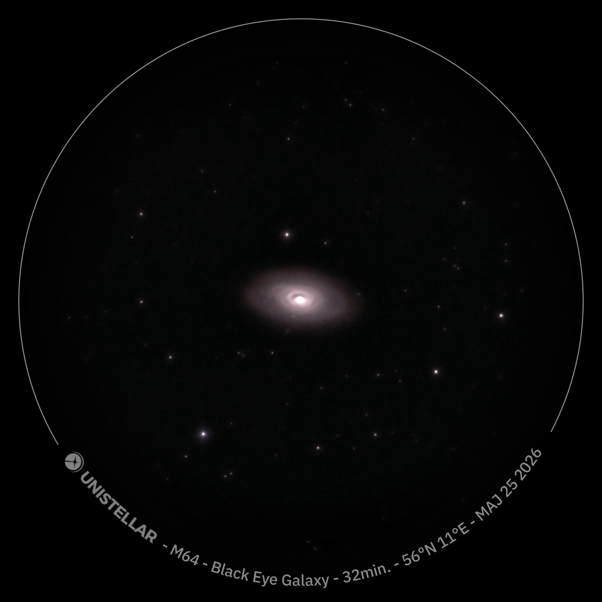
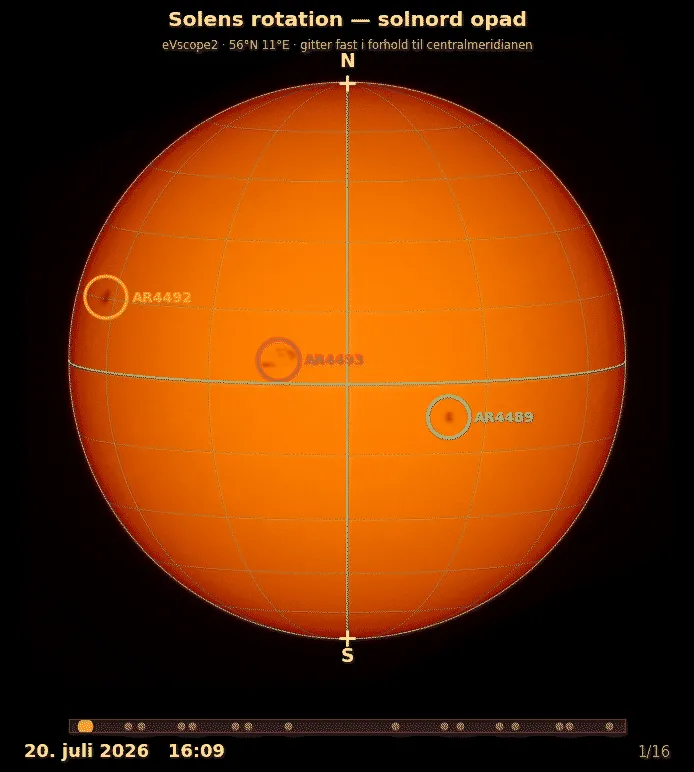
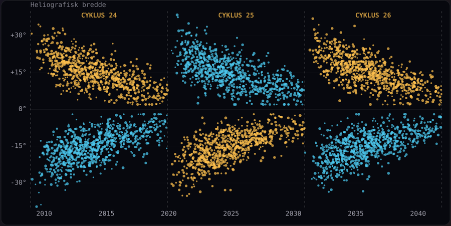
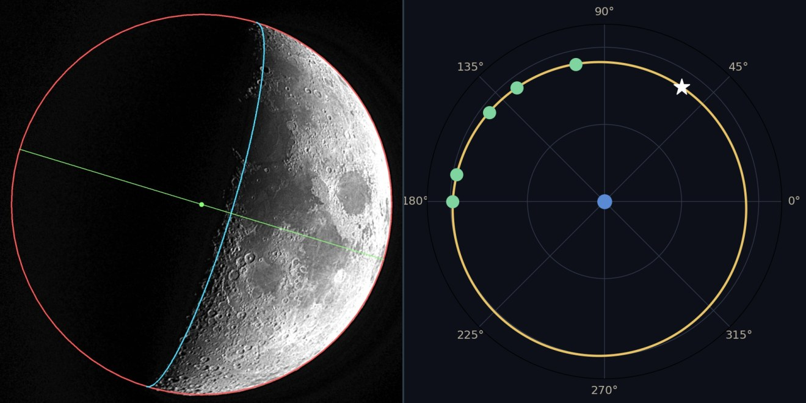
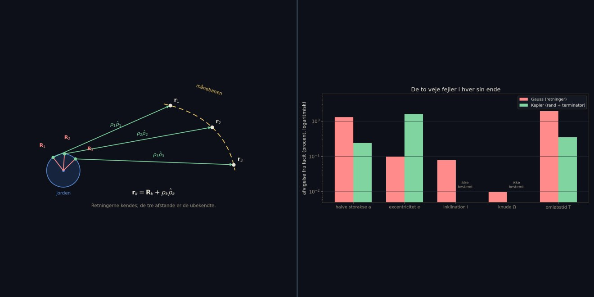

The Periodic Table
An overview of all the elements and their properties – the starting point for all chemistry and atomic physics.
A collection of interactive demonstrations and simulations that build a bridge from the inside of the atom to the cosmos – arranged by subject and in a teaching progression from the basic to the advanced.
💻 Best on a laptop, tablet or PCMost of the pages linked from here are still in Danish; English versions are being added one by one.
The building blocks of matter – from the periodic table to the inner life of individual atoms.
An overview of all the elements and their properties – the starting point for all chemistry and atomic physics.
Zinc, copper and a tablespoon of salt – electrochemistry on the kitchen table. Four home-built cells in series light a red LED. With live cell animation, half-reactions, standard potentials and an interactive series-connection simulator.
When changes occur in the electron clouds of atoms, they emit light. Here you can see how colours arise at the atomic level.
The simplest atom – and the starting point of quantum mechanics. The Balmer series and electron transitions visualised.
Can a cat be both alive and dead? An essay on the Schrödinger equation 100 years on – from Bohr's atom and de Broglie waves to information as the new centre of physics.
What does modern physics say about a universe without space, mass or time? An interactive essay on emergent spacetime, loop quantum gravity, holography and Lisa Randall's warped extra dimensions – with animated spin networks and branes you can explore.
The next step up from hydrogen. The basics of how the helium nucleus is built, and its binding energy.
When electrons are placed in a magnetic field, two energy levels appear. ESR exploits this effect to study unpaired electrons.
The paths of light through lenses, prisms and instruments – from refraction and Fresnel to polarisation and stimulated emission.
An interactive treatise in eighteen chapters – from Snell's law, the Fresnel coefficients and Fresnel zones, through Newton's prisms, atmospheric optics (the glory, the Brocken spectre, Alpenglow), Young's double slit, convex and concave lenses, spectacles, microscopes, refracting and reflecting telescopes and their mounts, the diffraction spikes on star images, the Bahtinov mask, the algebra of Jones matrices and electron microscopes (SEM, TEM and STM with quantum tunnelling), to anti-reflection coatings on everything from spectacles to stealth aircraft, with Hedy Lamarr's frequency hopping. It ends with worked examples and exercises for upper-secondary students at A and B level.
A lens is a Fourier transformer: the object's diffraction pattern lies in the focal plane, and the image is reassembled from it. A 3D optical bench with a genuine 2D Fourier calculation, where you choose the object and wavelength yourself and cut into the light with an iris, slits, dark field and Zernike's phase plate – or paint with black tape. Abbe's resolution limit, the Airy disc, the Abbe–Porter experiment, phase contrast, experiments you can do at home and A-level exercises.
Radio waves, heat radiation, visible light, X-rays and gamma rays are one and the same wave – only the wavelength sets them apart. Drag a probe across the whole spectrum from 10 km down to an atomic nucleus and watch wavelength, frequency and photon energy change in real time, with an animated E- and B-field wave, seven interactive region maps, the atmospheric window and the link to multi-wavelength astronomy with the eVscope2.
Light is a transverse wave. Explore how polarised light behaves with plastic and cling film between two Polaroid filters.
Pumping electrons and stimulated emission – how coherent light arises in a laser.
Six interactive stations on what happens when photon meets electron: quantum jumps, absorption and emission in the hydrogen atom, the photoelectric effect, Rayleigh scattering and the colour of the sky, the classical oscillator model behind the refractive index, and fluorescence with the Stokes shift.
Waves in the air – from basic frequencies to advanced duct acoustics.
How different frequencies interact and mix – an introduction to wave physics.
Analyse your own voice with a Fourier transform, or create new sounds from scratch.
How sound behaves on ice, in the forest and in a glass – acoustics in the real world.
Resonance and wave propagation in ducts – the subject of my master's thesis. Includes the full thesis.
One continuous thread from quantum non-locality to the cross-spectrum of two microphones. A fully worked essay in English: how complementarity, uncertainty, entropy and information are the same thing – how Gabor's time–frequency uncertainty is simply Heisenberg's relation without ℏ – and why the coherence function is mutual information, with the full proof. Along the way: the low- and high-frequency walls of p-p intensity measurement, the cross-spectrum as a hidden density matrix, and a closing thread back to duct acoustics and my own master's thesis.
What happens to the propagation of sound in the relativistic limit? An in-depth, advanced model.
Heat, work and entropy – from a concrete engine to a subtle paradox.
An applied dive into thermodynamics. How temperature differences are turned into mechanical work.
The classic heat engine in 3D – from firebox and boiler to piston and crank. The Rankine cycle, the Carnot limit and why even the best steam locomotives reached only 12–13% efficiency.
The theoretically perfect heat engine, formulated by Sadi Carnot in 1824. Four reversible processes between two heat reservoirs – and the efficiency η = 1 − T_c/T_h that sets the ceiling for every real engine. Interactive animation of the piston and P-V diagram, adjustable temperatures and worked examples.
Interactive 3D animations of all three types of turbine. Drag the wind speed and watch Betz's law in action, switch between Pelton, Francis and Kaplan, and follow the Brayton cycle through a gas turbine. With Danish examples and an efficiency comparison.
A theoretical dive into the concept of entropy – why is the entropy of mixing not well defined classically?
How does irreversibility arise in a universe of reversible laws? An essay from LMFK-bladet 1/2026, from Newtonian mechanics via Liouville, Boltzmann, Shannon and Landauer to a concrete calculation of the entropy of argon at 4 K and 300 K – and a tribute to the Sussex tradition under Colin Finn and Sir Tony Leggett.
Shannon's entropy made measurable. The page fetches articles from Wikipedia by itself, reads them one by one and builds its own language model – but every tenth article is set aside and never trained on. The learning curve is drawn live on graph paper: the cross-entropy in bits per word on exactly the text the machine has never seen. Pure guessing lies at about 14 bits, a human at about 5 (Shannon 1951). The curve falls – and then levels off, because a 3-gram model knows the company words keep, but not what they mean. That ceiling is the whole point.
Physics can be experienced everywhere – in the kitchen, on the road and out in nature.
A collection of small experiments and observations from the kitchen, the bathroom and the road.
The physics of waves on water, and how they spread out from a disturbance.
Do the Skagerrak and the Kattegat really collide at Grenen? Physics says no: the cross sea is created by refraction over Skagen Reef, diffraction round the tip of the spit and linear superposition — and it can be seen in miniature at any sandbar, as here at Gjerrild Nordstrand, in one and the same sea. With two simulators: a wave tank where you set the angle between two wave trains yourself and watch the chequered pattern appear, and a live wave model where a single wave train strikes a sandbar and folds round its tip into a cross sea — plus my own photographs from Grenen and Gjerrild. The subject is developed in the book Waves — The Shape That Travels, which follows the same observation on through eight other media.
Why doesn't a gyroscope fall over, and why does a tippe top turn upside down? Two animated 3D simulations that solve the equations of motion directly in the browser: a gyroscope with precession and nutation, and a tippe top with sliding friction, where the energy falls while Jellett's constant stays perfectly fixed. With the energy landscape that decides whether the top inverts, and the whole theory from the Lagrangian to the stability condition 1 − α < I₁/I₃ < 1 + α. Finally the gyroscope in practice: inertial navigation, from the gimballed platform and Apollo's gimbal lock, via the Sagnac effect in the ring laser, to the Schuler pendulum with the Earth's radius as its length – with an interactive graph of how sensor errors turn into position errors.
Connect two pendulums with a soft spring or hang them from a taut string, push one, and watch the swing travel over to the other and back again. An animated 3D simulation where you add and remove pendulums yourself (up to eight), give each its own mass and length, and pull the bobs out with the mouse. The page calculates the normal modes and their periods, measures each pendulum's period as it goes and shows the energy moving. With the theory: beats and the exchange period, tuning and resonance, energy transfer as in an elastic collision, and the chain as a waveguide with a lower cut-off frequency. Finally, a guide to building the experiment yourself with two chairs, some string and a few nuts – with a measurement sheet.
How do you get a swing going without touching the ground? An animated 3D simulation of a person tilting upper body and legs back and forth and so pumping the swing up. Choose an automatic person, a fixed rhythm, a limp person – or control the person yourself with a button and find the rhythm. Swing and person are two coupled pendulums, each with its own normal mode, and the page shows resonance, phase shift and the work done by the muscles. With the difference between seated pumping (driven oscillation) and standing pumping (parametric resonance).
Press a finger down slowly, and it sinks. Strike quickly, and the surface is hard. Squeeze a lump, and it is solid – let go, and it runs out over your hand, drips and snaps like glass. An interactive 3D simulation of the shear-thickening suspension, where the surface changes from shiny liquid to matt solid. Adjust the mixing ratio and watch the flow curve bend back. With the Wyart–Cates model of friction between the starch grains, the difference between dilatant and thixotropic – and a recipe for the kitchen.
Calculations and the physics behind fuel consumption on country roads and motorways (with a Hyundai i10 as the case).
The energy hidden in the atomic nucleus – and its dramatic release.
The physics behind explosions and nuclear bombs – fission, chain reactions and energy release.
From my own astrophotos of distant galaxies to the Earth's tilt, satellite orbits and comets — and the Moon's own orbit, both measured from a photograph and built as a 3D model.

My latest astrophoto: M64, the Black Eye Galaxy, about 17 million light years away, with its distinctive dark dust lane in front of the bright core. The galaxy's inner and outer gas rotate in opposite directions — a fossil trace of a merger about a billion years ago. Taken from Marshøj at 56°N 11°E.

Does the Sun rotate more slowly at high latitudes, as Newton and Nunn showed in 1951? A month and a half of daily sunspot images from a back garden on Djursland, geometrically calibrated against NOAA, five self-discovered measurement errors along the way — and a result that succeeded for one spot group (14.247 ± 0.027°/day, the study's best measurement) but not for the differential-rotation coefficient B itself. With an animation of eight days of rotation and an analysis of why B escaped.

A model you can turn, take apart and set going. Take the Sun apart into seven layers, from the core at 15.7 million degrees to the corona, and click through their temperatures and transport mechanisms. Then start the 11-year cycle: sunspots are born at 28° latitude and migrate towards the equator — and the butterfly diagram draws itself as it goes. It ends with why the cycle predicted that my own rotation measurement could only half succeed.
When the Earth crosses a comet's dust trail, a meteor shower results. Explore the Lyrids.
Understanding the Earth's tilt and the course of the year around the Sun – why do we have summer and winter?
Click on a planet, the Moon or the Sun and make that body the centre — the rest of the solar system is recalculated and traces its path in the new frame. With the Sun at the centre, everything runs in calm circles. With the Earth at the centre, Mars, Jupiter and Saturn reverse at regular intervals and form loops, and Venus draws its five-pointed star over eight years: the epicycles appear entirely by themselves, without a single body having changed its motion. Orbital periods, mean distances and positions at epoch 2000.0 are real; the orbits are simplified to circles in a single plane, and the Moon's distance is enlarged so that it can be seen.
Choose a date and a time, and see the Sun, the Earth and the Moon placed as they were – or will be – at exactly that moment. The Earth is tilted 23.44° and turns according to sidereal time, so you can see whether it is day or night in Denmark; the Moon takes its phase from the Sun's light and always turns the same face towards us. The lunar orbit is drawn two weeks forwards and back, so its 5° inclination to the ecliptic becomes visible – and with it, why there is not an eclipse at every new moon. Buttons find the next new moon, full moon and eclipse. Sizes and distances are not to scale, but all directions are calculated.
How long does the journey take between two points on an elliptical orbit? Kepler's equation is derived from Kepler's law of areas, and with it the lengths of the four seasons are calculated — and why summer is the longest. With two interactive tools: an anomaly explorer you can drag, and a season machine where you adjust the eccentricity and perihelion and watch the lengths change.
Choose a coming solar or lunar eclipse from a list — including the total eclipses of 12 August 2026 (Iceland/Spain) and 2 August 2027 (Egypt), the annular eclipses of 2027 and 2028, the Australian eclipse of 2028 and two lunar eclipses — and see its track laid across a rotatable, realistic Earth with a day/night shadow. The tracks are calculated with Meeus' solar and lunar theory and shadow geometry.
Two pages about the same phenomenon a year apart. In 2026 totality came at sunset over northern Spain, with the Sun only a few degrees above the horizon; in 2027 it stands high in the late morning over the Strait of Gibraltar and the Nile, and totality at Luxor lasts 6 minutes 23 seconds. Choose a city — from Grenaa and Southampton via Gijón and Málaga to Las Palmas, Rome, Cairo and Jerusalem — and watch the Moon cross the solar disc with true circle geometry: the coverage is calculated as the true area of overlap, and the Moon covers the Sun from the side facing the path of totality.
The geometry of the shadow – from Egyptian obelisks via Jantar Mantar in Delhi to your own printable dial. Five types of sundial in interactive 3D, a 5,000-year timeline, and the dance of the analemma across the sky.
Look at a satellite's orbit as seen from the Earth – shaped by the Earth's rotation – and its interplay with gravity.
Follow NASA's Artemis II mission and its path around the Moon.
Orbit determination from a Danish back garden: three images with a Unistellar eVscope 2, Gauss's method solved by an AI – and validated against NASA and ESA. Read the article from LMFK-bladet 2/2026, follow the comet's orbit, and use the teaching pack in class.
The same method as for PanSTARRS, but this time it did not work first time — and that is the point. Over a two-day arc, the curvature of the comet's path on the sky is only 5.4 arcseconds against a measurement uncertainty of 40, and the solution falls back onto the Earth's own orbit without any warning. The curvature arrow grows as the square of the arc length, so three more images raised the signal to 221 arcseconds — and with six images over twelve days the orbit closes: all seven elements within a little over ten per cent or a couple of degrees, the semi-major axis 3.35 against the true 3.12 AU. Along the way, two lessons that reach further: the distribution of the observations along the arc matters more than its length, and least squares on all six ends up further from the truth than three well-chosen ones, because the fit bends the orbit to absorb a systematic error instead of correcting it. With a laboratory where the whole of Gauss's method runs in your browser.

Five images of the Moon from Djursland — no star background, no astrometry, no pointing direction. The edge of the disc gives the distance to within a couple of hundred kilometres, the shadow line gives the elongation from the Sun, and together ten conditions are enough for four orbital parameters: a = 381,311 km (0.24% from the true value), e = 0.0614, the direction of the line of apsides and the orbital period of 26.956 days. With two dead ends along the way — the 50% isophote and extrapolation to zero — and the check showing that the bottleneck in the end is not the blurred terminator but the assumption that the Moon lies in the ecliptic.

Gauss's method of 1801 works with directions on the sky; Kepler's with distances and lengths read off the lunar disc itself. Run on the same material, they fail at opposite ends — exactly where their type of data is weak. Gauss hits the orbital plane to 0.03° and misses the semi-major axis by 1.3%; Kepler hits the semi-major axis to 0.24% and can say nothing about the plane. With the figure that explains why: the whole signal of Gauss's method is a deviation of eight arcminutes from a great circle, one part in 600 of the arc.
The orbit is not a fixed ellipse, and this model shows why. The line of nodes wanders backwards round in 18.6 years, the line of apsides forwards in 8.85 years — and between them the eccentricity breathes between 0.047 and 0.064 with a period of 205.9 days, governed solely by the angle between the line of apsides and the direction to the Sun. It is Ptolemy's evection, seen in orbital elements instead of in longitude. The date is real and can be wound forwards and back; the Moon shows the correct phase and the correct apparent size, and a phase portrait draws the level curve of the evection Hamiltonian as it runs. Set the exaggeration to 1×, and the orbit looks like a circle — the whole phenomenon is hidden in the fifth decimal place.
The classical method of 1801 in full: three eVscope 2 images of Jupiter (14 January, 14 February and 22 March 2026) give three directions on the sky – and with them all six orbital elements to within a few parts per thousand. Follow the machinery step by step: the geometry of the lines of sight, Lagrange's f and g functions, the eighth-degree equation with its two ‘ghost roots’ near the Earth's distance, and the iteration with light-travel time. With an interactive orbit map over the ecliptic and a polynomial graph you can read for yourself.
Our rumbling planet — tectonic plates, earthquakes, volcanoes and the Earth's inner layers.
On 20 May 2026 Zealand was shaken by a magnitude 3.9 earthquake with its epicentre in Køge Bay — one of the largest ever measured in Denmark. An interactive account of earthquakes, tectonic plates, the Earth's layers and types of volcano, told so that children and grandchildren can follow along.
From the first point to the curves of the conic sections — geometry as I myself wish I had met it.
A richly illustrated journey from the first point to the curves of the conic sections — through Pythagoras and Eratosthenes, sine and cosine, ellipses and hyperbolas, and on into the arches of bridges and domes and the ellipses of planetary orbits. Eleven chapters, written for my twelve grandchildren. The web version is in Danish; the book is also published in English.
Where natural science meets history, architecture and the life of the spirit.
Does the one pure scientific method exist at all? An essay in the philosophy of science on Popper, Kuhn and Feyerabend, Kekulé's Ouroboros dream, Galileo and the dialogue between science and faith.
A historical review of the 1864 battle – ballistics, tactics and context.
Take a walk through the Alhambra – Moorish architecture and geometric patterns in 2D and 3D.
Prayer and faith in everyday life – to pray with, not just to read about.
An extended essay: two ways in which a question can be built askew — from Ryle and the rigid duct to Schrödinger's cat, the crucifix, the Trinity and the Filioque.
An essay on science, faith and reason: why Dawkins, Hitchens and Harris miss the God of whom classical theology speaks — and where the real questions still wait, honestly put.
An interactive companion to the Rosary.
What it means to repent out of love for God – and an Act of Contrition to pray from the heart, in full and in short form.
For the struggle against temptations of the flesh – especially those that meet us online. Prayers to St Thomas Aquinas, St Michael the Archangel and St Aloysius Gonzaga.
A conversation about the history of the Arian controversy, the authority of the Church and what is really at stake in faith in the divinity of Christ – from the church conflict in Alexandria to the question of who can forgive sins.
Where the Holy Fire meets plasma physics — a 3D essay on the Holy Sepulchre in Jerusalem.
Jerusalem · Anno Domini
An interactive 3D account of Christianity's holiest place — and of the annual miracle that has kindled the faithful for more than seventeen hundred years. Step into the Aedicule, surrounded by living candlelight in the dusk of the church, and follow the camera through eight chapters in the long history of the Church of the Holy Sepulchre, from Constantine to the restoration of 2017.
In the closing chapters the thread runs from Moses' burning bush at Horeb, through medieval accounts of a Holy Fire that does not burn the skin, to Sir William Crookes' discovery of plasma as the fourth state of matter — and on to St Elmo's fire and ball lightning. A light that shines without consuming.